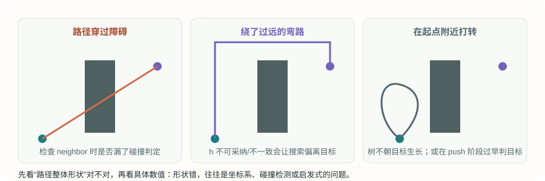
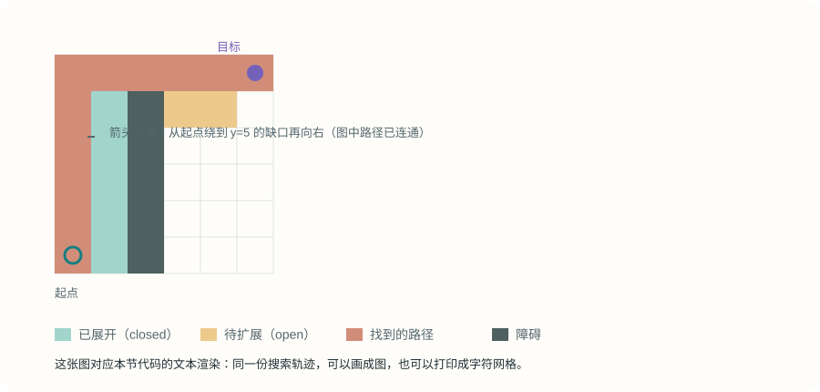
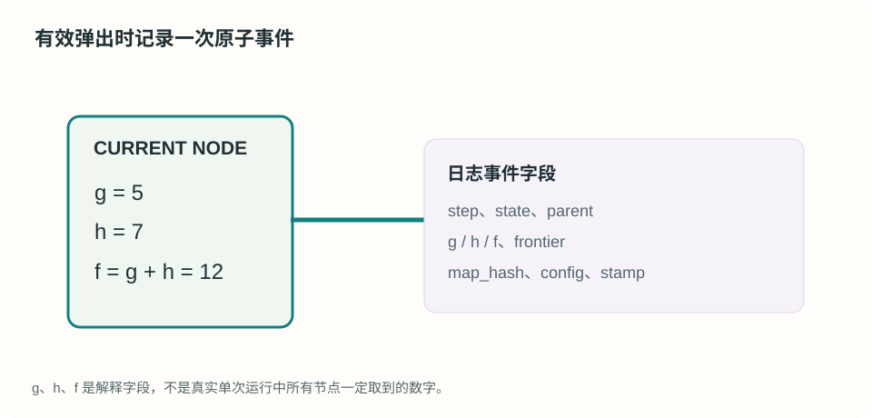

可视化与调试：把搜索过程画出来，比打印一千行日志更快定位问题
“照着伪代码写完了 A*，机器人却穿墙或原地打转”——这类问题几乎不可能靠 print 逐行数值找出来，因为它们是空间结构上的错误。本章讲怎么把搜索轨迹记录下来、怎么回放，以及几张图分别能回答什么问题。
为什么必须先看图
路径规划的本质是空间搜索——在一个几何空间里找一条路径。而 print 只能告诉你“第 125 步访问了节点 (13, 7)，g=42.3，f=58.1”。这行字里看不出搜索是不是在朝正确方向推进。一张图能当场回答几个 print 很难回答的问题：
- 搜索在推进吗？待扩展集合（open）是在朝目标扩张，还是四处漫延？
- 障碍标记对吗？碰撞检测有没有把墙的边缘多膨胀一圈？
- 路径形状对吗？是有锯齿状的急转弯，还是直接穿过了障碍？
- 采样合理吗？RRT 有没有陷在局部区域密集采样，而不朝目标生长？
要定位问题，先要清楚“看”的是哪一层。一次导航从地图与位姿开始，到搜索状态、输出路径，再到控制执行，每一层都有自己的输入版本与时间基准；出问题时能区分出错在哪一层，比多画几张图更重要。
TOOLING · 23

先看“路径整体形状”再看具体数值，是因为形状错了往往对应坐标系、碰撞检测或启发式这类系统性问题；而颜色/形状冗余标记（不只是颜色）能让色弱读者也能区分。 TOOLING · 23 
记录搜索轨迹
要能回放，就必须在算法运行时就把每一帧的状态记下来。对 A* 来说，一帧至少包含：当前展开的节点、当时的 open 集合、当时的 closed 集合，以及各节点的 g/f 值。只存最终路径是不够的——那样你只能看到结果，看不到搜索是怎么一步步走到的。
TOOLING · 23

记录轨迹会带来内存开销：每帧都完整拷贝一个集合会很浪费。实用做法是只记增量（新展开的节点、从 open 移入 closed 的节点），或只对关键帧做快照。对教学与调试而言，先追求“能回放”比先追求“省内存”更重要。
回放的载体是一串结构化事件，而不是截图。每次有效弹出（把节点从 open 确立为当前节点）记一条原子事件，至少包含步号、状态、父节点、g/h/f 与当前 frontier 大小，再附上 map_hash、算法配置和时间戳，才能保证事后能重放。
TOOLING · 23

可运行的轨迹回放示例（Python 3.10+）
下面把“记录轨迹 + 字符渲染”写成可验证的例子。为控制篇幅分两段，按顺序放入同一个 viz_demo.py，运行 python3 viz_demo.py。第一段是记录每一帧的 A*：
import heapq
WALLS = {(2,0),(2,1),(2,2),(2,3),(2,4)} # 一墙带缺口
START, GOAL, N = (0,0), (5,5), 6
def nbrs(c):
x, y = c
for dx, dy in ((1,0),(-1,0),(0,1),(0,-1)):
n = (x+dx, y+dy)
if 0 <= n[0] < N and 0 <= n[1] < N and n not in WALLS:
yield n
def astar(start, goal):
q, g, parent = [(0, start)], {start: 0}, {start: None}
closed, frames = set(), []
while q:
_, cur = heapq.heappop(q)
if cur in closed:
continue
closed.add(cur)
frames.append({"cur": cur,
"open": {c for _, c in q if c not in closed},
"closed": set(closed)})
if cur == goal:
path = []
while cur is not None:
path.append(cur); cur = parent[cur]
return frames, path[::-1]
for nb in nbrs(cur):
if nb not in g or g[cur] + 1 < g[nb]:
g[nb] = g[cur] + 1; parent[nb] = cur
heapq.heappush(q, (g[nb] + abs(nb[0]-goal[0]) + abs(nb[1]-goal[1]), nb))
return frames, None
第二段接在第一段之后，把某一帧渲染成字符网格并做断言：
def render(frame, path=()):
pset = set(path)
rows = []
for y in range(N-1, -1, -1):
row = []
for x in range(N):
c = (x, y)
if c in WALLS: row.append("#")
elif c == frame["cur"]: row.append("*")
elif c in pset: row.append("+")
elif c in frame["closed"]: row.append(".")
elif c in frame["open"]: row.append("o")
else: row.append("·")
rows.append("".join(row))
return "\n".join(rows)
frames, path = astar(START, GOAL)
assert path and path[0] == START and path[-1] == GOAL
assert all(c not in WALLS for c in path)
assert any(GOAL in f["open"] or f["cur"] == GOAL for f in frames)
print(render(frames[-1], path))
print(f"展开 {len(frames)} 个节点，路径 {len(path)-1} 步")
# 输出（行末“·”为未访问格子）：
# +++++*
# +.#oo·
# +.#···
# +.#···
# +.#···
# +.#···
# 展开 16 个节点，路径 10 步
三个断言分别检查：路径从起点到终点、路径不穿墙、目标曾在搜索中被触达过。把 frames 里的任意一帧丢给 render，就能看到那一刻的展开状态——图中的颜色与这里的字符一一对应（. 已展开、o 待扩展、+ 路径、# 障碍）。
常见 bug 模式
把常见问题按“表现 → 根因 → 修复”列出来。遇到问题时，先对照“表现”找出形状特征，再查根因。
| 表现 | 根因 | 修复方向 |
|---|---|---|
| 路径穿过障碍 | 展开 neighbor 时漏了碰撞判定；或地图坐标系偏移 | 在 neighbor 展开内统一做碰撞检查；打印地图边界与障碍坐标核对 |
| 绕远路 / 多余扩展 | h 不可采纳（高估）；或 h 取整后不再一致 | 确保 h 不高估真实代价；若 h 不一致，需允许 reopen（比较 g 值） |
| 索引错误 / 搜索提前终止 | off-by-one：坐标范围写成 [0, w] | 边界统一为 [0, w-1]；在 neighbor 循环前加断言 |
| 搜索很慢、内存暴涨 | 同一节点被重复入堆、弹出时不检查 | pop 后立即 if cur in closed: continue，并允许更新更优 g |
| 到了目标还继续搜 | 目标检测在 push 阶段而非 pop 阶段 | 统一在 pop 时检测（A* 标准做法），或明确说明为何另选 |
注意：在 Python 里 int 与 float 的混合比较本身没有问题，把它当成“精度丢失”是常见的误因。真正会导致异常的是取整／截断使启发式不再一致，此时需要 reopen。写 bug 清单时不要把“语言细节”与“算法性质”混为一谈。
RViz 与 ROS 可视化
在 ROS 2 里，RViz 是默认的可视化工具，与 Nav2 导航栈配合使用。几个容易踩的坑：
- 固定坐标系（Fixed Frame）必须与规划器一致：若规划器用
map而 RViz 显示在odom下，轨迹会看起来在“飘”；坐标变换（tf）缺失时甚至什么也不显示。 - 用 Marker/MarkerArray 画你自己的中间量：全局路径、局部前瞻点、DWA 的候选轨迹、被拒绝的轨迹分别用不同的 Marker，并用颜色 + 线型/标记形状冗余区分，而不是只靠颜色。
- 代价地图分层看：Nav2 的 costmap 有膨胀层、障碍层等多层，把各层分开看才能定位“为什么这里被当成障碍”。
可视化不能代替断言。图好看不代表算法对；本章的字符网格与图形一样，只是“看”的手段，真正的验收仍然是上一节的那些断言与第 24 章的基准测试。
交互：启发式强弱与展开节点数
同一个 8×8 栅格、同一堵墙，只改变启发式强弱：紧的 Manhattan（可采纳且一致）只展开很少节点；弱到 h = 0（退化为 Dijkstra）会展开明显更多。两者都找到路径，但搜索代价不同。
Manhattan：展开节点较少，路径较短。
网格与墙为教学示意，不是任何真实地图。
边界条件
- 图好看不等于算法对：可视化是定位问题的手段，真正的验收仍然靠断言与基准测试；本章字符网格与交互只是“看”的工具。
- 记录轨迹有内存代价：每帧完整拷贝集合会很浪费；实用中只记增量或关键帧快照。
- 字符网格是教学尺度：它适合小栅格与逻辑调试，不能替代真实地图上的渲染与位姿坐标系校验。
- 启发式强弱不是唯一因素：相等 f 值的 tie-breaking 会极大影响展开数；对比不同启发式时必须固定 tie-breaking 策略。
调试路径规划的最短路径通常是：先用一个极小地图确认路径形状对，再逐步加复杂度。不要在 2000×2000 的真实地图上调试一个在 6×6 上都走不对的碰撞检测。
原始来源
- Hart, Nilsson & Raphael (1968), A Formal Basis for the Heuristic Determination of Minimum Cost Paths, Artificial Intelligence 4(2)——A* 的原始工作，含启发式可采纳性。
- LaValle (2006), Planning Algorithms, Cambridge University Press——搜索、采样与可视化的教材背景。
- ROS 2 Nav2 官方文档与 RViz 用户指南——代价地图分层与可视化工具，版本以官方文档为准。
- 本章的四幅图、字符渲染与交互均为教学示意，不对应任何具体调试工具或地图。